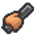

здоров'я
Здоров'я це життя в цій грі. Якщо він впаде до 0, ви будете вибиті і відправлені в лазарет. Максимальна кількість здоров'я, яке ви можете отримати, - 50, що досягається при силі 100. Життя буде повільно падати кожен раз, коли тебе відправлять до лазарету.

Тепло або жара
Тепло - це те, що ви отримуєте, коли не робите щось правильно Коли ваше тепло досягне 90%, стражники будуть атакувати вас відразу, а якщо ви зовні, ви будете застрелені. Кількість тепла, яке ви отримуєте від охоронців, залежить від думки охоронців про вас. Чим вище думку охоронців, тим менше тепла ви отримуєте від них, чим нижче думка, тим більше тепла ви отримуєте від охоронців. Під час блокування ваше тепло піднімається до 99%. При температурі 90% або вище ви не можете отримати роботу. Ви також отримуєте тепло, якщо ви носите одяг охоронця, коли на вулиці вночі і вдень.
Швидкість / Фітнес
Визначає, як часто персонаж нападає під час бою. Більш висока Швидкість зменшує час між атаками, збільшуючи збиток персонажа за секунду. Щоб збільшити швидкість персонажа, гравцеві доведеться або бігати по біговій доріжці, пропускати, використовувати килимок для йоги або натискати на мішку. Зауважте, що швидкість не впливає на швидкість ходьби персонажа.

Думка
Сам програвач не має цієї статистики на екрані свого профілю. Скоріше, кожен інший персонаж у грі має для цього значення, яке позначає їх думку гравця. Персонажі, які мають низьку думку про гравця, швидше атакують, не провокуючись, а також будуть хапати гравця, якщо вони застануть їх втекти. Охоронці з низькою думкою зруйнують плакати та штори для простирадла, розміщені гравцем. Коли думка про ув'язненого досягає 80 або більше, ви можете набрати їх, натискаючи "Q", перебуваючи біля них; проте ви не можете набирати символів у мобільній версії. Набраний ув'язнений буде атакувати будь-якого ув'язненого чи охоронця, на який ви націлені, або який атакує гравця.